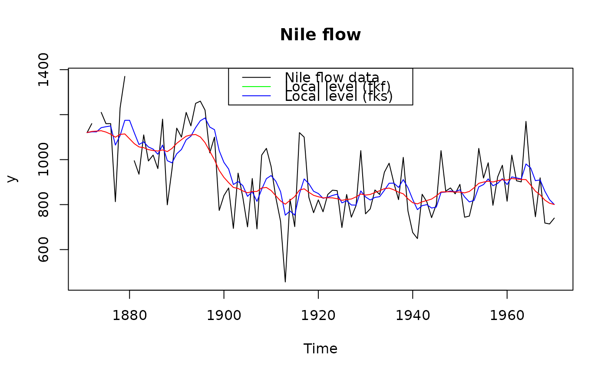

This function can be run after running fkf to produce
"smoothed" estimates of the state variable \(\alpha_t\).
Unlike the output of the filter, these estimates are conditional
on the entire set of \(n\) data points rather than only the past, see details.
fks(FKFobj)An S3-object of class "fkf", returned by fkf.
An S3-object of class "fks" which is a list with the following elements:
ahatt A \(m \times n\)-matrix containing the
smoothed state variables, i.e. ahatt[,t] = \(a_{t|n}\)Vt A \(m \times m \times n\)-array
containing the variances of ahatt, i.e. Vt[,,t] = \(P_{t|n}\)
The following notation is taken from the fkf function descriptions
and is close to the one of Koopman et al. The smoother estimates
$$a_{t|n} = E[\alpha_{t} | y_1,\ldots,y_n]$$
$$P_{t|n} = Var[\alpha_{t} | y_1,\ldots,y_n]$$
based on the outputs of the forward filtering pass performed by fkf.
The formulation of Koopman and Durbin is used which evolves the two values \(r_{t} \in R^m\) and \(N_{t} \in R^{m \times m}\) to avoid inverting the covariance matrix.
Iteration:
If there are no missing values the iteration proceeds as follows:
Initialisation: Set \(t=n\), with \(r_t =0\) and \(N_t =0\).
Evolution equations: $$L = T_{t} - T_{t}K_{t}Z_{t}$$ $$r_{t-1} = Z_{t}^\prime F_{t}^{-1} v_{t} + L^\prime r_{t}$$ $$N_{t-1} = Z_{t}^\prime F_{t}^{-1} Z_{t} + L^\prime N_{t} L$$
Updating equations: $$a_{t|n} = a_{t|t-1} + P_{t|t-1}r_{t-1}$$ $$P_{t|n} = P_{t|t-1} - P_{t|t-1}N_{t-1}P_{t|t-1}$$
Next iteration: Set \(t=t-1\) and goto “Evolution equations”.
Koopman, S. J. and Durbin, J. (2000). Fast filtering and smoothing for multivariate state space models Journal of Time Series Analysis Vol. 21, No. 3
## <--------------------------------------------------------------------------->
## Example: Local level model for the Nile's annual flow.
## <--------------------------------------------------------------------------->
## Transition equation:
## alpha[t+1] = alpha[t] + eta[t], eta[t] ~ N(0, HHt)
## Measurement equation:
## y[t] = alpha[t] + eps[t], eps[t] ~ N(0, GGt)
y <- Nile
y[c(3, 10)] <- NA # NA values can be handled
## Set constant parameters:
dt <- ct <- matrix(0)
Zt <- Tt <- matrix(1)
a0 <- y[1] # Estimation of the first year flow
P0 <- matrix(100) # Variance of 'a0'
## Estimate parameters:
fit.fkf <- optim(c(HHt = var(y, na.rm = TRUE) * .5,
GGt = var(y, na.rm = TRUE) * .5),
fn = function(par, ...)
-fkf(HHt = matrix(par[1]), GGt = matrix(par[2]), ...)$logLik,
yt = rbind(y), a0 = a0, P0 = P0, dt = dt, ct = ct,
Zt = Zt, Tt = Tt)
## Filter Nile data with estimated parameters:
fkf.obj <- fkf(a0, P0, dt, ct, Tt, Zt, HHt = matrix(fit.fkf$par[1]),
GGt = matrix(fit.fkf$par[2]), yt = rbind(y))
## Smooth the data based on the filter object
fks.obj <- fks(fkf.obj)
## Plot the flow data together with local levels:
plot(y, main = "Nile flow")
lines(ts(fkf.obj$att[1, ], start = start(y), frequency = frequency(y)), col = "blue")
lines(ts(fks.obj$ahatt[1,], start = start(y), frequency = frequency(y)), col = "red")
legend("top", c("Nile flow data", "Local level (fkf)","Local level (fks)"),
col = c("black", "green", "blue", "red"), lty = 1)
